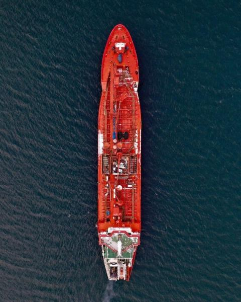

Государственное предприятие АО «Ямалгосснаб» на протяжении 19 лет выступает региональным оператором поставок топливно-энергетических ресурсов в объеме более 100 тысяч тонн в год.
Централизованная поставка нефтепродуктов, угля каменного и дров топливных в навигацию 2022 года производилась на основании плановой потребности в топливно-энергетических ресурсов для предприятий коммунального и агропромышленного комплекса, социальной сферы, предприятий жизнеобеспечения Ямало-Ненецкого автономного округа, расположенных в районах с ограниченными сроками завоза грузов утвержденной 21.04.2022г. Правительством ЯНАО, в лице Заместителя Губернатора ЯНАО - С.В. Карасева.
Топливно-энергетические ресурсы завозятся во все 7 районов округа, в 31 населенный пункт, самый южный из которых село Азово Шурышкарского района и самый северный село Гыда Тазовского района.
Первое топливо – стабильный газовый конденсат доставляется в начале мая в село Халясавэй, Пуровского района, когда ледовая обстановка не позволяет производить поставки в остальные населенный пункты округа.
Доставка энергоресурсов в округ проходит в несколько этапов, по мере освобождения реки Обь и ее притоков от льда. В южные и центральные населенные пункты округа топливо завозится в объеме, позволяющем полностью заполнить резервуарный парк, в летний период топливо частично расходуется, осенью довозится уже израсходованный остаток. В северные населенные пункты топливо доставляется разом, в очень сжатый период отсутствия на реке льда.
Централизованная поставка в навигацию 2022 года имела следующие отличительные особенности:
В соответствии с решением Губернатора Ямало-Ненецкого округа Д.А. Артюхова, региональному оператору был предоставлен бюджетный кредит в размере 5,5 миллиардов рублей для обеспечения своевременных расчетов с поставщиками топливно-энергетических ресурсов и услуг по доставке на территорию автономного округа.
Также в перечень предприятий Централизованной поставки нефтепродуктов, помимо предприятий жилищно-коммунального комплекса ЯНАО, были включены прочие хозяйствующие субъекты предприятия агропромышленного комплекса, социальной сферы, потребительских обществ и предприятий жизнеобеспечения, обеспечивающих потребности населения в населенных пунктах с ограниченными сроками завоза в данных видах продукции (суммарная потребность таких покупателей составила более 5 тыс. тонн дизельного топлива и бензина).
В целом, процесс поставки топливно-энергетических ресурсов в навигацию 2022 года, прошел без сбоев, несмотря на низкие уровни воды в реках Обь-Иртышского бассейна. Основной объем продукции был доставлен в более ранние сроки – май, июнь, июль, этому способствовало несколько факторов, основными из которых являются следующие: - готовность АО «Ямалкоммунэнерго» к приемке нефтепродуктов в ряде населенных пунктов в ранние сроки и в больших объемах (в том числе по причине проведения ремонтных работ в 2021 году на емкостных парках); - привлечение генеральным перевозчиком АО «Омтранснефтепродукт» большего количества флота для перевозок нефтепродуктов.
По итогам завершения навигации 2022 года была произведена поставка следующих объемов топливно-энергетических ресурсов:
Топливо дизельное арктическое - 38 338 тонн, в том числе:
- АО «Газпромнефть-ОНПЗ» - 10 562 тонн;
- ООО «Газпром переработка» Сургутский ЗСК - 27 776 тонн.
Топливо дизельное зимнее – 21 566 тонн (АО «Газпромнефть-ОНПЗ»);
Топливо дизельное летнее – 1 000 тонн (АО «Газпромнефть-ОНПЗ»);
Бензин Регуляр АИ-92 – 2 882 тонн (АО «Газпромнефть-ОНПЗ»);
Конденсат газовый стабильный – 9 455 тонн, в том числе:
- Бованенковское НГКМ ООО «Газпром добыча Надым» - 8 267 тонн;
- Уренгойский завод по подготовке конденсата к транспорту ООО «Газпром добыча Уренгой» - 1 187 тонн.
Уголь каменный – 15 610 тонн (АО «Шубарколь комир»);
Древесина топливная - 1 100 м3.
В последние годы учет сдаваемого топлива значительно усилился, так как во всех населенных пунктах в местах выгрузки установлены приборы учета массомеры, что позволило региональному оператору вести абсолютный контроль над принимаемым на хранение топливом.
Основным получателем энергоресурсов в округ, более 90 % является - АО «Ямалкоммунэнерго», а также ООО «Ямал-Энерго» и ЗАО «Спецтеплосервис». Благодаря профессионализму их сотрудников топливо принималось на местах в соответствии с графиками и без значительных простоев флота.